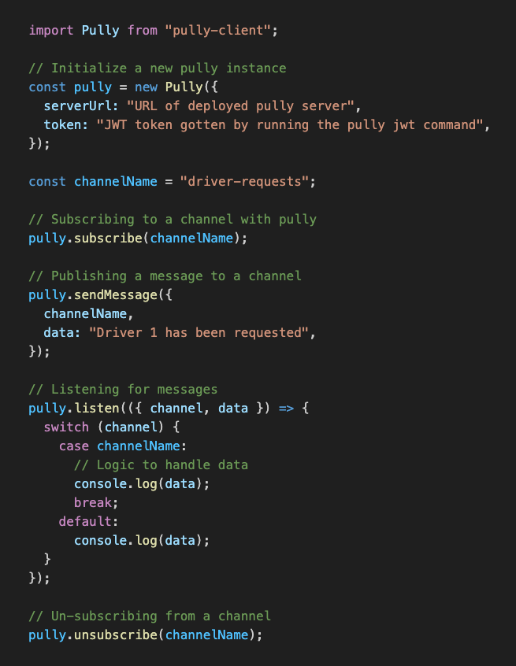

#messaging
#notifications
#messaging
#notifications 
Realtime messaging infrastructure.
Use Pully to manage in app messaging or notifications in realtime
or deploy the
infrastructure to your own server for your custom needs
Case Study (Actively being written)
1. About Pully
Pully is a realtime messaging infrastructure. You can either make use of the open source version that has been built to manage realtime features in your application or deploy the entire infrastructure to your own AWS account.
Pully is comprised of four major parts: The pully server which serves as the entry point to the infrastructure and handles socket io connections, the pully client library which is installable through npm and gives you the ability to use pully in your client side apps, pully functions which act as middlewares to receive messages and give users the ability to act on them before they are published and lastly the pully cli which manages deploying the infrastructure and provides commands to manage pully functions.
2. The motivation
Real-time applications play a crucial role in modern digital experiences, offering immediate and synchronized interactions between users and systems. It is used in applications where realtime updates are essential.
Some examples include messaging and chat apps, collaborative tools like google workspace, stock and trading platforms amongst others.
3. How is realtime implemented
There are several methods of implementing communication between client and server side. This section explores some of these approaches.
3.1. Data Transfer Pattern: HTTP Requests
In this form of data transfer pattern, the client requests for data from a server and the server responds with the information. This is not suitable for realtime communication because data flow is dependent on a client's action rather than an automatic update.

3.2. Data Transfer Pattern: Pub/Sub
Publish subscriber pattern is a messaging pattern used in distributed systems and event-driven architectures. In the Pub/Sub pattern, there are two main actors: publishers and subscribers. A publisher is responsible for sending messages (events) to a central message broker or a topic. Subscribers express interest in certain types of messages by subscribing to specific topics or channels. In this type of data transfer pattern, both publishers and subscribers do not need to be aware of each others existence. It is also scalable given minimum dependencies as communication depends on the message broker.

This is the pattern we have employed in the pully infrastructure.
4. Pully Architecture Diagram
5. How does Pully work?
This session explains everything that happens from client to server side communication.
5.1. Installing the pully client library
The Pully client handles client side communication to the server. You can install the pully client library by running npm install pully-client or by downloading the script from the CDN
The pully client exposes methods for subscribing and unsubscribing to/from a channel as well as publishing and listening for messages.
 Example usage of pully client library5.2. Pully Functions
Pully functions act as middlewares between the point of publishing and subscription. They enable the in-transit message processing. Whenever a message is sent to a channel, it passes through the middleware functions based on the relationship between functions and channels in the relationships.json file.
Pully function code is saved in AWS S3 and deployed to AWS Lambda. The reason for this is because we needed a way to quickly update the function without restarting the server and the only way to do this was to have the middleware functions as a seperate service.
Whenever a new function is created by issuing the command pully function add [function-name]. A new folder would be created in your projects base directory with an index.js file inside which is where you would act on received messages.
In this example, the received message is uppercased.To view the status of all pully functions, you can run the command pully function status. This would print the status of all functions in the termminal in a tabular format. A function can either be in Create, Update or No Change state.
Example usage of pully function status command.To delete a function, you just need to run the pully function delete [function-name]. This would delete the locally, from S3 and Lambda.
5.3. Relationships.json file
In order to know which functions need to be invoked when messages are sent to specific channels, we needed a way to map the relationship between functions and channels. We also had to store the relationship somewhere. The first thought was to store the relationship in a variable on the server. The problem with this approach is that each time the server reloads, the information would be lost. To combat this we opted for a json file which would be loaded on the server and also saved to s3 so that in the case of a server reload, the data isn't lost.
We had to think of a way for the user to freely update this relationship between functions and channels. The first way was to create a cli command where the user can directly issue commands to add channels and functions to the relationships.json file. This would have introduced unnecessary complexities given that more cli commands would have to be written plus finding a way to update the contents in the json. The other problem is that the user would not have been able to make multiple changes conviniently. The best way to sync changes was to allow a relationships.json file live on the client side. The user can make updates as required and then deploy the changes after. The cli command would just communicate with a post endpoint which receives the updated json content, validates that it is in the right format and updates the data on the server plus in s3.
Example of a relationships.json file.6. Pully Server
6.1. Server Description
The Pully Server which is just a simple Node.JS server makes use of socket.io to manage real-time, bidirectional, event-based communication between web clients (like browsers) and servers.
6.2. Major Dependencies
- @aws-sdk: Used for communicating with AWS resources.
- redis: Used to publish the updated relationships file to all subscribers in the case of auto scaling.
- socket.io-redis: In a distributed system with multiple Node.js processes or servers, each process maintains its own list of connected clients. This means that broadcasting events using Socket.IO's built-in mechanism would only reach clients connected to the same server. This library allows all instances or servers to communicate with each other through Redis.
6.3. How is Pully Deployed?
The entire application is containerized using Docker. If you want to update the Dockerfile, you can clone or fork this repository and run docker build -t [your-tag], then push to docker hub. You then need to change the docker image in the deploy.js file in the deployment repository to the new image name.
Deployment is done using AWS Elastic Container Service. A new ECS Cluster is setup and the dockerized application is added as a task to a fargate service launch type.
6.4. How is Auto Scaling handled?
Auto Scaling policy is set up on the ECS Service to auto scale tasks based on memory and CPU usage. The policy is currently setup to allow a maximum of 4 tasks running at a time.
AWS Elastic load balancer is also employed to distribute traffic across the several tasks running on ECS.